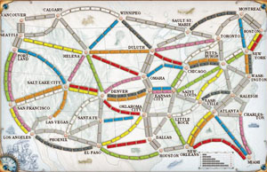

Ticket to Ride için basit bir sanal oyuncu
February 11, 2012
Ticket to Ride, Monopoly ve Tabu'dan sonra en sevdiğim kutu oyunlarından biri oldu diyebilirim. Geçen dönem yapay zeka dersinde bu oyunu oynayan basit bir yapay zekaya sahip oyuncu geliştirmiştik. Her ne kadar prologda kod yazmak pek zevkli olmasa da oyunu oynaması oldukça zevkli diyebilirim.
Oyunda genel amaç Kuzey Amerika'daki şehirleri birbirine bağlamak. Tamamlanan yollar ne kadar uzunsa o kadar puan kazanılıyor, ayrıca tamamlanan hedef kartları ve en uzun bitişik yol için de ayrıca puan kazanılıyor. Oyunun kuralları hakkında detaylı bilgiye aşağıdaki bağlantıdan ulaşılabilir:
Arkadaşla birlikte geliştirdiğimiz basit bir yapay zekaya sahip sanal oyuncunun stratejisi ise aşağıdaki gibi özetlenebilir:
Oyun başında 3 hedef kartının 2'li ve 3'lü kombinasyonları için kartların toplam puanının kullanılması gereken minimum vagon sayısına oranı hesaplanarak fayda oranı en yüksek kart kombinasyonu (genellikle birbiriyle örtüşen yollara sahip hedefler) seçiliyor. Sonraki adımda oyuncu hedef şehirleri birbirine bağlamaya çalışmaya başlıyor ve oyun bitene kadar yeni hedef kartı çekmiyor. (Gerçek oyuncularda yerine göre yeni hedef kartları çekmek daha mantıklı olabilir.) Oyuncunun tamamlayabileceği bir yol mevcutsa öncelikle yolu tamamlıyor, yoksa çekilebilecek vagon kartlarına bakıyor. Yollar tamamlanırken en kısa yol, şehirlerin harita üzerinde kuş uçuşu mesafesini baz alan aç gözlü (greedy) bir arama algoritması ile hızlı bir şekilde hesaplanıyor. Açık vagon kartlarında ihtiyaç duyulan bir renk varsa çekiliyor, yoksa kapalı desteden vagon kartı çekiliyor. Hedef şehirleri bağlamak için planlanan yollardan biri diğer oyuncular tarafından işgal edildiğinde mümkün olan en kısa yollar tekrar hesaplanıyor. Başlangıçtaki hedef kartları tamamlandıktan sonra oyuncu gösteri moduna geçiyor ve diğer oyuncular hedef kartlarını tamamlayamadan oyunu bitirmeyi ve diğer oyuncuların penaltı alarak puan kaybetmesini sağlamayı amaçlıyor. Gösteri modunda oyuncu bir yandan uzunluğu kısa ve kritik olan yolları işgal ederek diğer oyuncuların hedeflerine ulaşmasını zorlaştırmaya çalışırken bir yandan da elindeki vagonları bir an önce tüketerek diğer oyuncuların hedeflerine ulaşmasına fazla vakit bırakmayarak oyunu bitirmeye çalışıyor.
Evet oyunu arkadaşlarınıza karşı oynadığınızda böyle bir strateji izlemek çok mantıklı olmayabilir, ancak oyuncumuzun rakiplerinin de kendi gibi sanal oyuncular olacağı düşünüldüğünde hızlı ve basit bir strateji ile oyunu kazanması mümkün olmaktadır.
Programlama, Yapay zeka